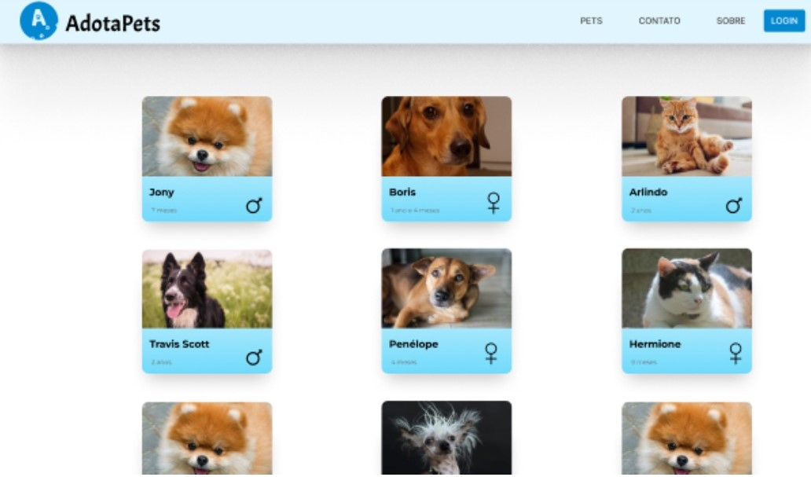
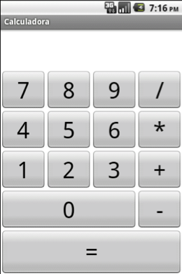

Projeto 1
O projeto "AdotaPets" é uma plataforma online inovadora e compassiva que visa conectar animais de estimação em busca de um lar amoroso com pessoas que desejam abrir seus corações e lares para um novo membro da família. Com um compromisso firme com o bem-estar animal e a responsabilidade social, o AdotaPets oferece uma experiência completa e amigável para ajudar a facilitar o processo de adoção. Através do site AdotaPets, os usuários podem explorar perfis detalhados de animais disponíveis para adoção, incluindo cães, gatos e outros animais de companhia. Cada perfil apresenta informações vitais, como idade, raça, temperamento e histórico de saúde, permitindo que os potenciais adotantes tomem decisões informadas e encontrem o animal que melhor se adapte ao seu estilo de vida.
Projeto 2
Desenvolvi uma calculadora interativa usando JavaScript, HTML e CSS. A calculadora executa operações básicas como adição, subtração, multiplicação e divisão em tempo real. A interface é intuitiva, com botões organizados e um layout responsivo para diferentes dispositivos. Aprendi sobre manipulação de eventos, funções JavaScript e estrutura de código durante o projeto.
